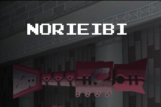

Overview
Norieibi is quite an interesting reaver. This shark-like bot likes to hang out in groups, and it also comes in two different flavors; there's a small and large variation that have completely different behavioral patterns. The smaller variety will pretty much mind its own business unless you attack it, in which case every one in the room will quickly rush at you to avenge their fallen comrade(s). The larger ones will rush at you regardless of your behavior towards them, and can also fire off a torpedo if need be. Interestingly enough, you can actually ride on the platform on the large Norieibi's back. It's not a bad idea, either, as you can safely kill the reaver without fear of retaliation.
What seperates Norieibi from most other reavers in Nino Ruins (barring Midosu and Mandomantal to an extent) is that its behavior is largely differrent when the water is drained. Without a water source, Norieibi will flop up and down like a fish out of water. You'll take some damage if you touch it, but otherwise it's a sitting duck for whatever you choose to dish out.
Dealing With It
Norieibi's bark is far worse than it's bite. The small ones can be avoided altogether since they only attack when provoked. Granted, they only take 1 or 2 shots to kill, but the zenny drop is extremely low, so there's no real point. The larger ones are a bit tougher. The have far more HP than the little ones, and they're also more aggressive. Still, they're farily easy to read, and the torpedoes can be shot down or thrown back if necessary. They drop a rather reasonable amount of zenny as well, so killing them isn't a bad idea.
Coming In For A Landing
Overall, I really like the design of Norieibi. They really helped to bring out that 'watery' atmosphere, and the polish of them hilariously flopping about on dry land was really well thought out. Looking back at it now, I really wish there had been more aquatic reaverbots, as most of the reavers in Nino Ruins were ones that had already been seen before, and truth be told they were far more annoying underwater than they were on land. TBPH, the water-ruin exclusive reaverbots (Norieibi, Mandomantal, and Midosu) were the only ones I actually liked seeing down there. Norieibi is quite an awesome reaverbot, and rates a perfect 10!